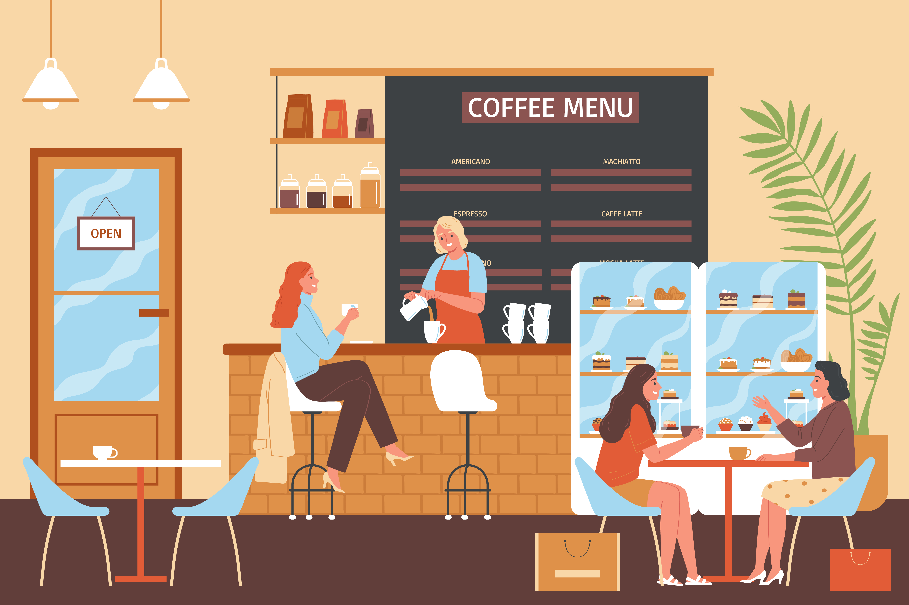

WELCOME TO KAPEHAN NI RON
Indulge in the aroma of freshly brewed happiness! We're thrilled to welcome you to KAPEHAN NI RON, where each cup tells a story and every moment is steeped in warmth.
At KAPEHAN NI RON, we believe that life is too short for bad coffee. That's why we've dedicated ourselves to crafting the perfect cup, blending premium beans with passion and precision. Whether you're a seasoned coffee connoisseur or a casual sipper, our cozy space is designed to be your home away from home.
Step inside and experience more than just a coffee shop - immerse yourself in a community of caffeine enthusiasts. Our baristas are artisans, each cup is a masterpiece, and every visit is an opportunity to savor the simple joys of life.
Explore our diverse menu, from velvety lattes to bold espressos, and pair your favorite brew with a delightful selection of pastries and treats. Each item is carefully curated to complement the rich flavors of our coffees.
We invite you to linger, laugh, and create memories in our welcoming ambiance. Whether you're seeking a quiet corner for reflection, a collaborative space for work, or simply a spot to catch up with friends, KAPEHAN NI RON is here to be the backdrop to your moments.
Thank you for choosing us as your coffee destination. We look forward to serving you a cup of happiness soon.
Sip, savor, enjoy !
KAPEHAN NI RON